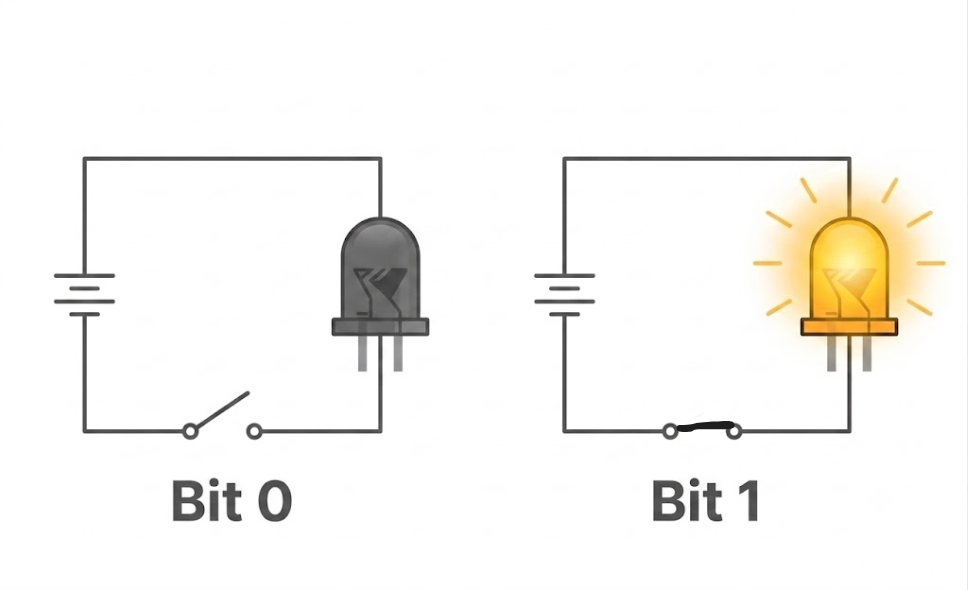
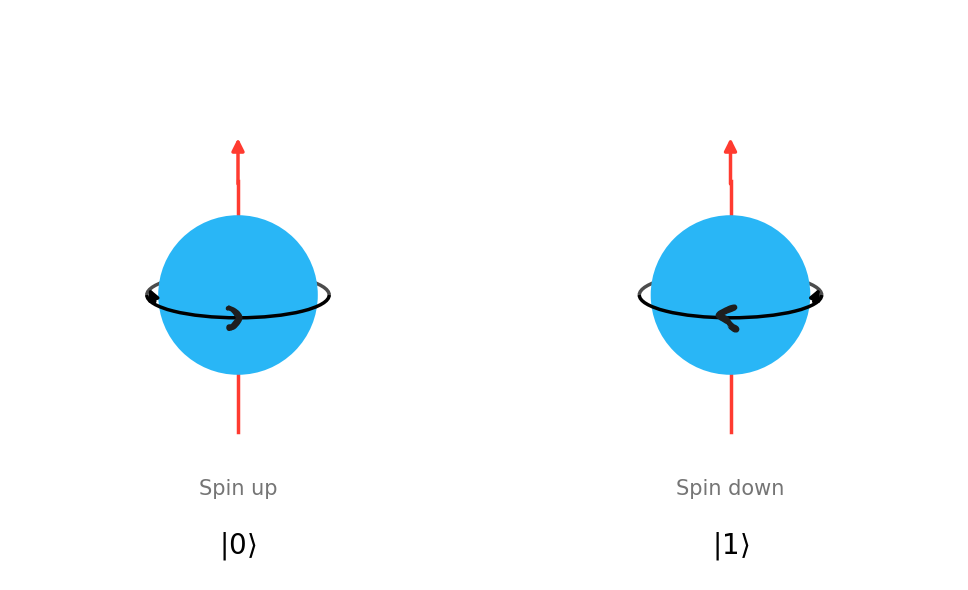

Alief Hisyam Al Hasany MR
NRP: 5001221098
Departemen Fisika, FSAD ITS
2026-07-20
Istilah Quantum Bit berasal dari gabungan kata Quantum dan Bit.
| Bit | Qubit | |
|---|---|---|
|
\[0\]
|
\[\longrightarrow\]
|
\[|0\rangle\]
|
|
\[1\]
|
\[\longrightarrow\]
|
\[|1\rangle\]
|
| Sifat Bit | Sifat Qubit | |
|---|---|---|
|
0 atau 1
|
\[\longrightarrow\]
|
\[|\psi\rangle = \alpha|0\rangle + \beta|1\rangle\]
|
Vektor Kolom
\[|0\rangle = \begin{pmatrix} 1 \\ 0 \end{pmatrix}, \quad |1\rangle = \begin{pmatrix} 0 \\ 1 \end{pmatrix}\]
\[\begin{aligned} |\psi\rangle &= \alpha|0\rangle + \beta|1\rangle \\ &= \alpha \begin{pmatrix} 1 \\ 0 \end{pmatrix} + \beta \begin{pmatrix} 0 \\ 1 \end{pmatrix} = \begin{pmatrix} \alpha \\ \beta \end{pmatrix} \end{aligned}\]
Syarat Normalisasi
\[\langle\psi| = \begin{pmatrix} \alpha^* & \beta^* \end{pmatrix}\]
\[\begin{aligned} \langle\psi|\psi\rangle &= \begin{pmatrix} \alpha^* & \beta^* \end{pmatrix} \begin{pmatrix} \alpha \\ \beta \end{pmatrix} = 1 \\ &= \alpha^*\alpha + \beta^*\beta = 1 \\ &= |\alpha|^2 + |\beta|^2 = 1 \end{aligned}\]
Bentuk Fisis Bit dan Qubit
Bit
Qubit
Bagaimana untuk sistem 2 Bit dan 3 Bit?
\[\{00, 01, 10, 11\}\]
\[|\psi\rangle = c_{00}|00\rangle + c_{01}|01\rangle + c_{10}|10\rangle + c_{11}|11\rangle\]
\[\{000, 001, 010, 011, 100, 101, 110, 111\}\]
\[{|\psi\rangle = c_{000}|000\rangle + c_{001}|001\rangle + \dots + c_{111}|111\rangle}\]
\[| \psi \rangle_{AB} = c_{00}|00\rangle + c_{01}|01\rangle + c_{10}|10\rangle + c_{11}|11\rangle\]
Apakah keadaan gabungan \(| \psi \rangle_{AB}\) selalu menyatu, atau sebenarnya dapat diurai menjadi dua qubit berbeda?
\[| \psi \rangle_{AB} = | \psi \rangle_A \otimes | \psi \rangle_B\]
\[ \begin{aligned} | \psi \rangle_{AB} &= (x_0|0\rangle + x_1|1\rangle)(y_0|0\rangle + y_1|1\rangle) \\ &= x_0|0\rangle(y_0|0\rangle + y_1|1\rangle) + x_1|1\rangle(y_0|0\rangle + y_1|1\rangle) \\ &= x_0 y_0|00\rangle + x_0 y_1|01\rangle + x_1 y_0|10\rangle + x_1 y_1|11\rangle\\ &= c_{00}|00\rangle + c_{01}|01\rangle + c_{10}|10\rangle + c_{11}|11\rangle \end{aligned} \]
\[| \psi \rangle_{AB} = | \psi \rangle_A \otimes | \psi \rangle_B\]
\[| \psi \rangle_{AB} \neq | \psi \rangle_A \otimes | \psi \rangle_B\]
\[|\psi\rangle_{ABC} = c_{000}|000\rangle + c_{001}|001\rangle + \dots + c_{111}|111\rangle\]
Bagaimana kita menguji dan mengklasifikasikan jenis keterbelitan ketika sistem meluas menjadi tiga qubit?
\[|\psi\rangle_{ABC} = |\psi\rangle_A \otimes |\psi\rangle_B \otimes |\psi\rangle_C\]
\(|\psi\rangle_A = x_0|0\rangle + x_1|1\rangle\),
\(|\psi\rangle_B = y_0|0\rangle + y_1|1\rangle\), dan
\(|\psi\rangle_C = z_0|0\rangle + z_1|1\rangle\).
\[ \begin{aligned} | \psi \rangle_{ABC} &= (x_0|0\rangle + x_1|1\rangle)(y_0|0\rangle + y_1|1\rangle)(z_0|0\rangle + z_1|1\rangle) \\ &\quad + x_1 y_0|10\rangle(z_0|0\rangle + z_1|1\rangle) + x_1 y_1|11\rangle(z_0|0\rangle + z_1|1\rangle) \\ &= x_0 y_0 z_0|000\rangle + x_0 y_0 z_1|001\rangle + x_0 y_1 z_0|010\rangle + x_0 y_1 z_1|011\rangle \\ &\quad + x_1 y_0 z_0|100\rangle + x_1 y_0 z_1|101\rangle + x_1 y_1 z_0|110\rangle + x_1 y_1 z_1|111\rangle \\ &= c_{000}|000\rangle + c_{001}|001\rangle + c_{010}|010\rangle + c_{011}|011\rangle \\ &\quad + c_{100}|100\rangle + c_{101}|101\rangle + c_{110}|110\rangle + c_{111}|111\rangle \end{aligned} \]
Basis \(|000\rangle \rightarrow c_{000} = x_0 y_0 z_0\)
Basis \(|001\rangle \rightarrow c_{001} = x_0 y_0 z_1\)
Basis \(|010\rangle \rightarrow c_{010} = x_0 y_1 z_0\)
Basis \(|011\rangle \rightarrow c_{011} = x_0 y_1 z_1\)
Basis \(|100\rangle \rightarrow c_{100} = x_1 y_0 z_0\)
Basis \(|101\rangle \rightarrow c_{101} = x_1 y_0 z_1\)
Basis \(|110\rangle \rightarrow c_{110} = x_1 y_1 z_0\)
Basis \(|111\rangle \rightarrow c_{111} = x_1 y_1 z_1\)
Berdasarkan sistem persamaan hubungan koefisien sebelumnya, jika tidak ada solusi nilai \(\{x_i, y_j, z_k\}\) yang memenuhi, sistem 3-qubit tersebut memiliki 2 kemungkinan bentuk keterbelitan:
bentuk 2-Qubit dari 3-Qubit tidak bisa difaktorisasi dalam perkalian tensor dan
Bentuk umum Terbelit sebagian : \[|\psi\rangle_{A|BC} = |\psi\rangle_A \otimes |\psi\rangle_{BC}\]
\[|\psi\rangle_{AB|C} = |\psi\rangle_{AB} \otimes |\psi\rangle_C\]
\[|\psi\rangle_{B|AC} = |\psi\rangle_B \otimes |\psi\rangle_{AC}\]
bentuk 3-Qubit tidak bisa difaktorisasi dalam perkalian tensor dan \[|\psi\rangle_{ABC} \neq |\psi\rangle_A \otimes |\psi\rangle_B \otimes |\psi\rangle_C\]
Keterbelitan Sejati ini terdapat 2 bentuk
Keadaan GHZ (Greenberger-Horne-Zeilinger): \[|GHZ\rangle = g_000 |000\rangle + g_000 |111\rangle\]
Keadaan W: \[|W\rangle = w_100 |100\rangle + w_010 |010\rangle +w_001 |001\rangle\]
Dari bentuk 3 Qubit tadi
\[|\psi\rangle_{ABC} = c_{000}|000\rangle + c_{001}|001\rangle + \dots + c_{111}|111\rangle\]
\[ |\psi\rangle_{ABC} = \begin{pmatrix} c_{000} \\ c_{001} \\ c_{010} \\ c_{011} \\ c_{100} \\ c_{101} \\ c_{110} \\ c_{111} \end{pmatrix} \]
Membentuk basis paling sederhana \(|000\rangle\) menuju keadaan \(|\psi\rangle_{ABC}\) melalui matriks transformasi \(M\) berukuran \(8 \times 8\): \[|\psi\rangle_{ABC} = M |000\rangle\]
Berdasarkan syarat normalisasi :
\[ \begin{align*} \langle\psi|\psi\rangle_{ABC} &= 1\\ \langle000| M^\dagger M |000\rangle &= 1\\ \end{align*} \]
\[ \begin{align*} \langle\psi|\psi\rangle_{ABC} &= 1\\ \langle000| \boxed{M^\dagger M} |000\rangle &= 1\\ \end{align*} \]
didapatkan \(M^\dagger M = I\) dengan Matriks \(M\) uniter yang dapat di modelkan dari grup lie \(SU(N)\)
\[ M=SU(8) \]
\[\Downarrow\]
Terlalu banyak parameter (63 Parameter)
\[ M=SU(2) \otimes SU(2)\\ \otimes SU(2)\]
\[\Downarrow\] Selalu menghasilkan keadaan yang terpisah
\[ M=SU(4) \otimes SU(2)\\ M=SU(2) \otimes SU(4)\]
\[\Downarrow\] dapat menghasilkan keadaan 3 qubit dengan semua jenis keterbelitannya
Sebelum masuk ke Grup Lie (kontinu), sebuah himpunan \(G\) dengan operasi grup \(*\) harus memenuhi aksioma formal grup:
4 Aksioma Utama Grup \((G, *)\)
Grup Diskrit
Contoh grup diskrit terhadap operasi perkalian bilangan kompleks.
\[\mu_4 = \{1, i, -1, -i\}\]
\[\mu_2 = \{1, -1\}\]
Terlihat bahwa:
\[\mu_2 \subset \mu_4 \iff \{1, -1\} \subset \{1, i, -1, -i\}\]
Operasi pada sistem kuantum merupakan transformasi kontinu yang dimodelkan oleh Grup Lie, sedangkan arah transformasi infinitesimalnya dijelaskan oleh generator pada aljabar Lie.
Setiap elemen Grup Lie dapat dinyatakan sebagai
\[U(\theta_1,\theta_2,\ldots,\theta_n) = \exp\!\left( -i\sum_{k}\theta_k G_k \right),\]
Generator-generator memenuhi relasi al-jabar :
\[[G_i,G_j] = G_iG_j-G_jG_i = \sum_k c_{ij}^{\,k}G_k,\]
dengan \(c_{ij}^{\,k}\) merupakan konstanta struktur (structure constants).
\[\boxed{OO^T = I}\]
\[O = \begin{pmatrix} a_{11} & a_{12} \\ a_{21} & a_{22} \end{pmatrix} \rightarrow \text{4 parameter riil}\]
\[\Downarrow \boxed{OO^T = I}\]
\[\underbrace{O = \begin{pmatrix} \cos\alpha & \sin\alpha \\ -\sin\alpha & \cos\alpha \end{pmatrix}}_{3 \text{ parameter riil}} \xrightarrow{\det O = 1} \underbrace{O = \begin{pmatrix} \cos\alpha & \sin\alpha \\ -\sin\alpha & \cos\alpha \end{pmatrix} }_{3 \text{ parameter riil}}\]
\[\Downarrow \boxed{\text{dalam bentuk eksponensial}}\]
\[O(\alpha) = e^{\alpha G}, \quad G = \begin{pmatrix} 0 & -1 \\ 1 & 0 \end{pmatrix}\]
untuk dimensi lebih tinggi, misal \(3\times 3\), maka matriks rotasi dapat dinyatakan sebagai rotasi pada bidang-bidang tertentu, misal:
\[O_{12}(\phi) = \begin{pmatrix} \cos\phi & \sin\phi & 0 \\ -\sin\phi & \cos\phi & 0 \\ 0 & 0 & 1 \end{pmatrix} \] dengan generator \[ G_{12} = \begin{pmatrix} 0 & 1 & 0 \\ -1 & 0 & 0 \\ 0 & 0 & 0 \end{pmatrix}\]
\[O_{13}(\theta) = \begin{pmatrix} \cos\theta & 0 & \sin\theta \\ 0 & 1 & 0 \\ -\sin\theta & 0 & \cos\theta \end{pmatrix} \] dengan generator \[ G_{13} = \begin{pmatrix} 0 & 0 & 1 \\ 0 & 0 & 0 \\ -1 & 0 & 0 \end{pmatrix}\]
\[O_{23}(\psi) = \begin{pmatrix} 1 & 0 & 0 \\ 0 & \cos\psi & \sin\psi \\ 0 & -\sin\psi & \cos\psi \end{pmatrix} \] dengan generator \[ G_{23} = \begin{pmatrix} 0 & 0 & 0 \\ 0 & 0 & 1 \\ 0 & -1 & 0 \end{pmatrix}\]
\[\begin{align} O(\phi,\theta,\psi) &= O_{12}(\phi) O_{13}(\theta) O_{23}(\psi)\\ &=\begin{pmatrix} \cos\phi & \sin\phi & 0 \\ -\sin\phi & \cos\phi & 0 \\ 0 & 0 & 1 \end{pmatrix} \begin{pmatrix} \cos\theta & 0 & \sin\theta \\ 0 & 1 & 0 \\ -\sin\theta & 0 & \cos\theta \end{pmatrix}\\ &\begin{pmatrix} 1 & 0 & 0 \\ 0 & \cos\psi & \sin\psi \\ 0 & -\sin\psi & \cos\psi \end{pmatrix}\\ \end{align}\]
\[ \boxed{O(\phi,\theta,\psi) = e^{\phi \cdot G_{12}} e^{\theta \cdot G_{13}} e^{\psi \cdot G_{23}}}\]
Ketiga generator ini memenuhi relasi komutasi komutator: \([G_{12}, G_{23}] = 2G_{13}\).
\[\boxed{U^\dagger U=I \text{ dan } U U^\dagger =I,\; \det(U)=1}\]
\[\underbrace{U = \begin{pmatrix} a_{1}e^{i\alpha_{1}} & a_{2}e^{i\alpha_{2}} \\ b_{1}e^{i\beta_{1}} & b_{2}e^{i\beta_{2}} \end{pmatrix}}_{U(2)} \rightarrow \text{8 parameter riil}\]
\[\Downarrow \boxed{U^\dagger U=I \text{ dan } U U^\dagger =I}\]
\[\underbrace{U = \begin{pmatrix} \cos\theta \, e^{i\alpha_1} & \sin\theta \, e^{i\alpha_{2}} \\ -\sin\theta \, e^{i\beta_1} & \cos\theta \, e^{i(\alpha_2-\alpha_1+\beta_1)} \end{pmatrix}}_{SU(2)} \rightarrow \text{4 parameter riil}\]
\[\Downarrow \boxed{\det U = 1}\]
\[\underbrace{U_{SU(2)} = \begin{pmatrix} \cos\theta \, e^{i\alpha_1} & \sin\theta \, e^{i\alpha_2} \\ -\sin\theta \, e^{-i\alpha_2} & \cos\theta \, e^{-i\alpha_1} \end{pmatrix}}_{\text{3 parameter riil}}\]
untuk dimensi lebih tinggi, matriks kompleks 2 \(\times\) 2 dapat dinyatakan sebagai rotasi pada bidang kompleks tertentu, misal:
\[U_{12}(\phi) = \begin{pmatrix} \cos\phi & i\sin\phi \\ i\sin\phi & \cos\phi \end{pmatrix}=e^{i\phi \sigma_1} \] dengan generator \[ \sigma_1 = \begin{pmatrix} 0 & 1 \\ 1 & 0 \end{pmatrix}\]
\[U_{13}(\theta) = \begin{pmatrix} \cos\theta & \sin\theta \\ -\sin\theta & \cos\theta \end{pmatrix}=e^{i\theta \sigma_2} \] dengan generator \[\sigma_2 = \begin{pmatrix} 0 & -i \\ i & 0 \end{pmatrix}\]
\[U_{23}(\psi) = \begin{pmatrix} e^{i\psi} & 0 \\ 0 & e^{-i\psi} \end{pmatrix}=e^{i\psi \sigma_3} \] dengan generator \[ \sigma_3 = \begin{pmatrix} 1 & 0 \\ 0 & -1 \end{pmatrix}\]
\[\boxed{U_{SU(2)} = e^{i\phi \sigma_1} e^{i\theta \sigma_2} e^{i\psi \sigma_3}}\]
\[\boxed{U_{SU(2)} = e^{i(\alpha_1 \sigma_1+\alpha_2\sigma_2+\alpha_3 \sigma_3)}}\]
\[\boxed{U_{SU(2)} = e^{i \beta_1 \sigma_z} e^{i \beta_2 \sigma_y} e^{i \beta_3 \sigma_z}}\]
Ketiga generator ini tidak lain adalah matriks pauli yang memenuhi relasi komutasi komutator: \([\sigma_i, \sigma_j] = 2i \epsilon_{ijk} \sigma_k\) dengan \(\epsilon\) adalah konstanta permutasi ganjil.
Elemen umum dari Grup Lie Kontinu \(SU(4)\) dibangun melalui kombinasi linier dari seluruh 15 generator di atas menggunakan pemetaan eksponensial:
\[U_{SU(4)}(\boldsymbol{\theta}) = \exp\left( -i \sum_{k=1}^{15} \theta_k \lambda_k \right)\]
di mana \(\theta_k\) adalah 15 parameter sudut riil kontinu, dan \(\lambda_k\) membentuk Aljabar Lie \(\mathfrak{su}(4)\) dengan relasi komutasi:
\[[\lambda_i, \lambda_j] = 2i \sum_{k=1}^{15} f_{ijk} \lambda_k\]
Generator standar \(\lambda_k\) (\(k=1, \dots, 15\)) disajikan sebagai berikut:
\[\begin{aligned} \lambda_1 &= \begin{pmatrix} 0 & 1 & 0 & 0 \\ 1 & 0 & 0 & 0 \\ 0 & 0 & 0 & 0 \\ 0 & 0 & 0 & 0 \end{pmatrix}, & \lambda_2 &= \begin{pmatrix} 0 & -i & 0 & 0 \\ i & 0 & 0 & 0 \\ 0 & 0 & 0 & 0 \\ 0 & 0 & 0 & 0 \end{pmatrix}, & \lambda_3 &= \begin{pmatrix} 1 & 0 & 0 & 0 \\ 0 & -1 & 0 & 0 \\ 0 & 0 & 0 & 0 \\ 0 & 0 & 0 & 0 \end{pmatrix} \\ \lambda_4 &= \begin{pmatrix} 0 & 0 & 1 & 0 \\ 0 & 0 & 0 & 0 \\ 1 & 0 & 0 & 0 \\ 0 & 0 & 0 & 0 \end{pmatrix}, & \lambda_5 &= \begin{pmatrix} 0 & 0 & -i & 0 \\ 0 & 0 & 0 & 0 \\ i & 0 & 0 & 0 \\ 0 & 0 & 0 & 0 \end{pmatrix}, & \lambda_6 &= \begin{pmatrix} 0 & 0 & 0 & 0 \\ 0 & 0 & 1 & 0 \\ 0 & 1 & 0 & 0 \\ 0 & 0 & 0 & 0 \end{pmatrix} \\ \lambda_7 &= \begin{pmatrix} 0 & 0 & 0 & 0 \\ 0 & 0 & -i & 0 \\ 0 & i & 0 & 0 \\ 0 & 0 & 0 & 0 \end{pmatrix}, & \lambda_8 &= \frac{1}{\sqrt{3}}\begin{pmatrix} 1 & 0 & 0 & 0 \\ 0 & 1 & 0 & 0 \\ 0 & 0 & -2 & 0 \\ 0 & 0 & 0 & 0 \end{pmatrix} \end{aligned}\]
\[\begin{aligned} \lambda_9 &= \begin{pmatrix} 0 & 0 & 0 & 1 \\ 0 & 0 & 0 & 0 \\ 0 & 0 & 0 & 0 \\ 1 & 0 & 0 & 0 \end{pmatrix}, & \lambda_{10} &= \begin{pmatrix} 0 & 0 & 0 & -i \\ 0 & 0 & 0 & 0 \\ 0 & 0 & 0 & 0 \\ i & 0 & 0 & 0 \end{pmatrix}, & \lambda_{11} &= \begin{pmatrix} 0 & 0 & 0 & 0 \\ 0 & 0 & 0 & 1 \\ 0 & 0 & 0 & 0 \\ 0 & 1 & 0 & 0 \end{pmatrix} \\ \lambda_{12} &= \begin{pmatrix} 0 & 0 & 0 & 0 \\ 0 & 0 & 0 & -i \\ 0 & 0 & 0 & 0 \\ 0 & i & 0 & 0 \end{pmatrix}, & \lambda_{13} &= \begin{pmatrix} 0 & 0 & 0 & 0 \\ 0 & 0 & 0 & 0 \\ 0 & 0 & 0 & 1 \\ 0 & 0 & 1 & 0 \end{pmatrix}, & \lambda_{14} &= \begin{pmatrix} 0 & 0 & 0 & 0 \\ 0 & 0 & 0 & 0 \\ 0 & 0 & 0 & -i \\ 0 & 0 & i & 0 \end{pmatrix} \end{aligned}\]
\[\lambda_{15} = \frac{1}{\sqrt{6}}\begin{pmatrix} 1 & 0 & 0 & 0 \\ 0 & 1 & 0 & 0 \\ 0 & 0 & 1 & 0 \\ 0 & 0 & 0 & -3 \end{pmatrix}\]
Konstruksi dilakukan dengan menyisipkan subgroup \(SU(2)\) ke dalam 6 matriks uniter elementer dengan parameter 18 riil \((\theta_k, \phi_k, \psi_k)\):
\[U_{SU(4)} = R_{12}(\theta_6, \phi_6, \psi_6) R_{13}(\theta_5, \phi_5, \psi_5) R_{14}(\theta_4, \phi_4, \psi_4) R_{23}(\theta_3, \phi_3, \psi_3) R_{24}(\theta_2, \phi_2, \psi_2) R_{34}(\theta_1, \phi_1, \psi_1)\]
\[C_j = \cos \theta_j,S_j = \sin \theta_j\]
\[R_{12} = \begin{pmatrix} C_6 e^{i\phi_6} & S_6 e^{i\psi_6} & 0 & 0 \\ -S_6 e^{-i\psi_6} & C_6 e^{-i\phi_6} & 0 & 0 \\ 0 & 0 & 1 & 0 \\ 0 & 0 & 0 & 1 \end{pmatrix}\]
\[R_{13} = \begin{pmatrix} C_5 e^{i\phi_5} & 0 & S_5 e^{i\psi_5} & 0 \\ 0 & 1 & 0 & 0 \\ -S_5 e^{-i\psi_5} & 0 & C_5 e^{-i\phi_5} & 0 \\ 0 & 0 & 0 & 1 \end{pmatrix}\]
\[R_{14} = \begin{pmatrix} C_4 e^{i\phi_4} & 0 & 0 & S_4 e^{i\psi_4} \\ 0 & 1 & 0 & 0 \\ 0 & 0 & 1 & 0 \\ -S_4 e^{-i\psi_4} & 0 & 0 & C_4 e^{-i\phi_4} \end{pmatrix}\]
\[R_{23} = \begin{pmatrix} 1 & 0 & 0 & 0 \\ 0 & C_3 e^{i\phi_3} & S_3 e^{i\psi_3} & 0 \\ 0 & -S_3 e^{-i\psi_3} & C_3 e^{-i\phi_3} & 0 \\ 0 & 0 & 0 & 1 \end{pmatrix}\]
\[R_{24} = \begin{pmatrix} 1 & 0 & 0 & 0 \\ 0 & C_2 e^{i\phi_2} & 0 & S_2 e^{i\psi_2} \\ 0 & 0 & 1 & 0 \\ 0 & -S_2 e^{-i\psi_2} & 0 & C_2 e^{-i\phi_2} \end{pmatrix}\]
\[R_{34} = \begin{pmatrix} 1 & 0 & 0 & 0 \\ 0 & 1 & 0 & 0 \\ 0 & 0 & C_1 e^{i\phi_1} & S_1 e^{i\psi_1} \\ 0 & 0 & -S_1 e^{-i\psi_1} & C_1 e^{-i\phi_1} \end{pmatrix}\]
Perkalian keenam blok penyisipan tersebut menghasilkan representasi eksponensial baru dengan (\(\lambda_3, \lambda_8, \lambda_{15}\)) dan rotasi (\(\lambda_2,\lambda_2, \lambda_3, \cdots, \lambda_{13}, \lambda_{14}\)) dan menghasilkan 15 parameter:
\[\boxed{ \begin{align} U_{SU(4)} =\;& \exp\!\left(i\,\theta_6\bigl[\cos\tilde{\phi}_{12}\,\lambda_2 + \sin\tilde{\phi}_{12}\,\lambda_1\bigr]\right) \notag \\ &\cdot\exp\!\left(i\,\theta_5\bigl[\cos\tilde{\phi}_{13}\,\lambda_5 + \sin\tilde{\phi}_{13}\,\lambda_4\bigr]\right) \notag \\ &\cdot\exp\!\left(i\,\theta_4\bigl[\cos\tilde{\phi}_{14}\,\lambda_{10} + \sin\tilde{\phi}_{14}\,\lambda_9\bigr]\right) \notag \\ &\cdot\exp\!\left(i\,\theta_3\bigl[\cos\tilde{\phi}_{23}\,\lambda_7 + \sin\tilde{\phi}_{23}\,\lambda_6\bigr]\right) \notag \\ &\cdot\exp\!\left(i\,\theta_2\bigl[\cos\tilde{\phi}_{24}\,\lambda_{12} + \sin\tilde{\phi}_{24}\,\lambda_{11}\bigr]\right) \notag \\ &\cdot\exp\!\left(i\,\theta_1\bigl[\cos\tilde{\phi}_{34}\,\lambda_{14} + \sin\tilde{\phi}_{34}\,\lambda_{13}\bigr]\right) \notag \\ &\cdot \exp\left[ i\left( \Phi_1\lambda_3 + \Phi_2\lambda_8 + \Phi_3\lambda_{15} \right)\right]. \label{eq:USU4_exp} \end{align} }\]
\[ \begin{align} U_{SU(4)} &= e^{i\lambda_3\alpha_1} e^{i\lambda_2\alpha_2} e^{i\lambda_3\alpha_3} e^{i\lambda_5\alpha_4} e^{i\lambda_3\alpha_5} e^{i\lambda_{10}\alpha_6} e^{i\lambda_3\alpha_7} e^{i\lambda_2\alpha_8} e^{i\lambda_3\alpha_9} e^{i\lambda_5\alpha_{10}} e^{i\lambda_3\alpha_{11}} e^{i\lambda_2\alpha_{12}}\\ & e^{i\lambda_3\alpha_{13}} e^{i\lambda_8\alpha_{14}} e^{i\lambda_{15}\alpha_{15}}\\ \end{align} \] dan bentuk ini didapatkan dari (Tilma et al., 2002) dengan 15 parameter \(\alpha_k\) yang merupakan kombinasi linier dari 18 parameter \((\theta_k, \phi_k, \psi_k)\).
Untuk keadaan murni tiga qubit
\[ |\psi\rangle = \sum_{i_1,i_2 \cdots i_n =0}^{1} c_{i_1,i_2 \cdots i_n}|i_1,i_2 \cdots i_n\rangle, \qquad \sum_{i_1,i_2 \cdots i_n=0}^{1}|c_{i_1,i_2 \cdots i_n}|^2=1, \]
matriks densitas didefinisikan sebagai
\[ \rho=|\psi\rangle\langle\psi|. \]
beberapa sifat properti matematis \(\rho\) ini adalah
\[ \rho^\dagger=\rho. \]
\[ \mathrm{Tr}(\rho)=1. \]
Reduksi parsial menjadi 2-Qubit menghasilkan
\[ \rho_{12} = \operatorname{Tr}_{3}(\rho) \]
\[ \rho_{13} = \operatorname{Tr}_{2}(\rho) \]
\[ \rho_{23} = \operatorname{Tr}_{1}(\rho) \]
Secara eksplisit bentuk diatas adalah:
\[ \rho_{12} = \mathrm{Tr}_3(\rho) = \sum_{k=0}^{1} (\mathbb I\otimes\mathbb I\otimes\langle k|) \,\rho\, (\mathbb I\otimes\mathbb I\otimes|k\rangle). \]
\[ \rho_{13} = \mathrm{Tr}_2(\rho) = \sum_{k=0}^{1} (\mathbb I\otimes\langle k|\otimes\mathbb I) \,\rho\, (\mathbb I\otimes|k\rangle\otimes\mathbb I). \]
\[ \rho_{23} = \mathrm{Tr}_1(\rho) = \sum_{k=0}^{1} (\langle k|\otimes\mathbb I\otimes\mathbb I) \,\rho\, (|k\rangle\otimes\mathbb I\otimes\mathbb I). \]
Reduksi parsial menjadi 1-Qubit menghasilkan
\[ \rho_{1} = \operatorname{Tr}_{23}(\rho) \]
\[ \rho_{2} = \operatorname{Tr}_{13}(\rho) \]
\[ \rho_{3} = \operatorname{Tr}_{12}(\rho) \]
Secara eksplisit bentuk diatas adalah:
\[ \rho_{1} = \sum_{p=0}^{1} \sum_{q=0}^{1} (\mathbb{I} \otimes \langle p| \otimes \langle q|) \, \rho \, (\mathbb{I} \otimes |p\rangle \otimes |q\rangle) \]
\[ \rho_{2} = \sum_{p=0}^{1} \sum_{r=0}^{1} (\langle p| \otimes \mathbb{I} \otimes \langle r|) \, \rho \, (|p\rangle \otimes \mathbb{I} \otimes |r\rangle) \]
\[ \rho_{3} = \sum_{q=0}^{1} \sum_{r=0}^{1} (\langle q| \otimes \langle r| \otimes \mathbb{I}) \, \rho \, (|q\rangle \otimes |r\rangle \otimes \mathbb{I}) \]
Matriks densitas tereduksi \(\rho_i\) selanjutnya digunakan untuk menghitung entropi von Neumann yang didefinisikan sebagai
\[ S(\rho_i) = -\operatorname{Tr} \left( \rho_i \log \rho_i \right). \]
Dengan proses matematis lebih lanjut dan diagonalisasi matriks didapatkan :
\[ S(\rho_i) = -\sum_{j}\lambda_j\log \lambda_j, \]
dengan \(\lambda_j\) merupakan nilai eigen dari \(\rho_i\) yang memenuhi
\[ \sum_j \lambda_j = 1, \qquad 0 \le \lambda_j \le 1. \]
| Keadaan | \(S(\rho_A)\) | \(S(\rho_B)\) | \(S(\rho_C)\) |
|---|---|---|---|
| Terpisah sepenuhnya \(S(\rho^{(\mathrm{sep})})\) | \(0\) | \(0\) | \(0\) |
| Terbelit sepenuhnya \(S(\rho^{(\mathrm{ent})})\) | \(>0\) | \(>0\) | \(>0\) |
| Gabungan \((12)\vert3\), \(S(\rho^{(\mathrm{cp2})})\) | \(>0\) | \(>0\) | \(0\) |
| Gabungan \(1\vert(23)\), \(S(\rho^{(\mathrm{cp1})})\) | \(0\) | \(>0\) | \(>0\) |
| Gabungan \(2\vert(13)\), \(S(\rho^{(\mathrm{cp3})})\) | \(>0\) | \(0\) | \(>0\) |
Konstruksi SU(2)
Dari persamaan \[\boxed{U_{SU(2)}(\theta, \phi, \lambda) = e^{i\lambda \sigma_z} e^{i\theta \sigma_y} e^{i\phi \sigma_z}}\] dipilih parameter \(\theta=\phi=\lambda=0\) sehingga \(U_{SU(2) }(0,0,0) = I\)
Konstruksi SU(4)
Dari persamaan \[\boxed{\begin{align} U_{SU(4)} &= e^{i\lambda_3\alpha_1} e^{i\lambda_2\alpha_2} e^{i\lambda_3\alpha_3} e^{i\lambda_5\alpha_4} e^{i\lambda_3\alpha_5} e^{i\lambda_{10}\alpha_6} e^{i\lambda_3\alpha_7} e^{i\lambda_2\alpha_8} e^{i\lambda_3\alpha_9} e^{i\lambda_5\alpha_{10}} e^{i\lambda_3\alpha_{11}} e^{i\lambda_2\alpha_{12}}\\ & e^{i\lambda_3\alpha_{13}} e^{i\lambda_8\alpha_{14}} e^{i\lambda_{15}\alpha_{15}}\\ \end{align}}\] dan parameter berupa \(\alpha_2,\alpha_4,\alpha_6,\alpha_8,\alpha_{10},\alpha_{12}\) secara berpasangan dan dengan pasangan nilai yang dipilih \(\frac{\pi}{12},\frac{\pi}{2}\). Selanjutnya,Pengembangan matriks dari produk tensor untuk model
\[U_{24} = I \otimes U_{SU(4)}(\alpha_i,\alpha_j)\]
dan
\[U_{42} = U_{SU(4)}(\alpha_i,\alpha_j) \otimes I \]
sebagai contoh pada parameter \(\alpha_2\) dan \(\alpha_4\): \[U_4(\alpha_{2},\alpha_{4}) = \begin{pmatrix} \cos\alpha_{2}\cos\alpha_{4} & \sin\alpha_{2} & \sin\alpha_{4}\cos\alpha_{2} & 0\\ -\sin\alpha_{2}\cos\alpha_{4} & \cos\alpha_{2} & -\sin\alpha_{2}\sin\alpha_{4} & 0\\ -\sin\alpha_{4} & 0 & \cos\alpha_{4} & 0\\ 0&0&0&1 \end{pmatrix}\] dan \[\begin{align*} U_{42}(\alpha_{2},\alpha_{4}) &=U_4(\alpha_{2},\alpha_{4})\otimes U_2,\\ \\ U_{42}(\alpha_{2},\alpha_{4}) &= \begin{pmatrix} \cos\alpha_{2}\cos\alpha_{4} &0&\sin\alpha_{2}&0&\sin\alpha_{4}\cos\alpha_{2}&0&0&0\\ 0&\cos\alpha_{2}\cos\alpha_{4}&0&\sin\alpha_{2}&0&\sin\alpha_{4}\cos\alpha_{2}&0&0\\ -\sin\alpha_{2}\cos\alpha_{4}&0&\cos\alpha_{2}&0&-\sin\alpha_{2}\sin\alpha_{4}&0&0&0\\ 0&-\sin\alpha_{2}\cos\alpha_{4}&0&\cos\alpha_{2}&0&-\sin\alpha_{2}\sin\alpha_{4}&0&0\\ -\sin\alpha_{4}&0&0&0&\cos\alpha_{4}&0&0&0\\ 0&-\sin\alpha_{4}&0&0&0&\cos\alpha_{4}&0&0\\ 0&0&0&0&0&0&1&0\\ 0&0&0&0&0&0&0&1 \end{pmatrix}. \end{align*}\]
dan
\[\begin{align*} U_{24}(\alpha_{2},\alpha_{4}) &=U_2\otimes U_4(\alpha_{2},\alpha_{4})\\ &= \begin{pmatrix} \cos\alpha_{2}\cos\alpha_{4}&\sin\alpha_{2}&\sin\alpha_{4}\cos\alpha_{2}&0&0&0&0&0\\ -\sin\alpha_{2}\cos\alpha_{4}&\cos\alpha_{2}&-\sin\alpha_{2}\sin\alpha_{4}&0&0&0&0&0\\ -\sin\alpha_{4}&0&\cos\alpha_{4}&0&0&0&0&0\\ 0&0&0&1&0&0&0&0\\ 0&0&0&0&\cos\alpha_{2}\cos\alpha_{4}&\sin\alpha_{2}&\sin\alpha_{4}\cos\alpha_{2}&0\\ 0&0&0&0&-\sin\alpha_{2}\cos\alpha_{4}&\cos\alpha_{2}&-\sin\alpha_{2}\sin\alpha_{4}&0\\ 0&0&0&0&-\sin\alpha_{4}&0&\cos\alpha_{4}&0\\ 0&0&0&0&0&0&0&1 \end{pmatrix}. \end{align*}\]
Pada Variasi \((SU(2) \otimes SU(4))(SU(4) \otimes SU(2))=U_{24} U_{42}\)
\[\boxed{\begin{align*} {\left|\psi_1 (\alpha_i,\alpha_j)\right\rangle}_{x} &= U_{42(x)}(\alpha_{i}, \alpha_{j})\,{\left|000\right\rangle}\\ \end{align*}}\]
\[\boxed{\begin{align*} {\left|\phi_1 (\alpha_i,\alpha_j)\right\rangle_{x}} &= U_{24(x)}(\alpha_{i}, \alpha_{j})\,{\left|\psi (\alpha_i,\alpha_j)\right\rangle}\\ &=U_{24(x)}(\alpha_{i}, \alpha_{j}) U_{42(x)}(\alpha_{i}, \alpha_{j})\,{\left|000\right\rangle} \end{align*}}\]
Pada Variasi \((SU(2) \otimes SU(4))(SU(4) \otimes SU(2))=U_{42} U_{24}\)
\[ \boxed{{\left|\psi_2 (\alpha_i,\alpha_j)\right\rangle_{x}}=U_{24(x)}(\alpha_{i}, \alpha_{j})\,{\left|000\right\rangle}}\]
\[\boxed{\begin{align*} {\left|\phi_2 (\alpha_i,\alpha_j)\right\rangle_{x}} &= U_{42(x)}(\alpha_{i}, \alpha_{j})\,{\left|\psi_2 (\alpha_i,\alpha_j)\right\rangle}\\ &=U_{42(x)}(\alpha_{i}, \alpha_{j}) U_{24(x)}(\alpha_{i}, \alpha_{j})\,{\left|000\right\rangle}\end{align*}}\]
\[\begin{align*} {\left|\psi_1 (\alpha_2,\alpha_4)\right\rangle_1} &= U_{42}(\alpha_{2}, \alpha_{4})\,{\left|000\right\rangle}\\ &= \begin{pmatrix}\cos{\left(\alpha_{2} \right)} \cos{\left(\alpha_{4} \right)}\\ 0 \\- \sin{\left(\alpha_{2} \right)} \cos{\left(\alpha_{4} \right)}\\ 0 \\- \sin{\left(\alpha_{4} \right)}\\ 0 \\ 0 \\ 0 \end{pmatrix} \\ % &= \cos{\left(\alpha_{2} \right)} \cos{\left(\alpha_{4} \right)} {\left|000\right\rangle} - \sin{\left(\alpha_{2} \right)} \cos{\left(\alpha_{4} \right)} {\left|010\right\rangle} - \sin{\left(\alpha_{4} \right)} {\left|100\right\rangle} \end{align*}\]
\[\begin{align*} {\left|\psi_2 (\alpha_2,\alpha_4)\right\rangle_1} &= U_{42}(\alpha_{2}, \alpha_{4})\,{\left|000\right\rangle}\\ &= \begin{pmatrix}\cos{\left(\alpha_{2} \right)} \cos{\left(\alpha_{4} \right)}\\- \sin{\left(\alpha_{2} \right)} \cos{\left(\alpha_{4} \right)}\\- \sin{\left(\alpha_{4} \right)}\\ 0 \\ 0 \\ 0 \\ 0 \\ 0 \end{pmatrix} \\ % &= \cos{\left(\alpha_{2} \right)} \cos{\left(\alpha_{4} \right)} {\left|000\right\rangle} - \sin{\left(\alpha_{2} \right)} \cos{\left(\alpha_{4} \right)} {\left|001\right\rangle} - \sin{\left(\alpha_{4} \right)} {\left|010\right\rangle} \end{align*}\]
\[\begin{aligned} |\psi_1 (\alpha_2,\alpha_4)\rangle_1 &= U_{42}(\alpha_{2}, \alpha_{4})\,|000\rangle \\ &= \cos(\alpha_{2})\cos(\alpha_{4})\,|000\rangle \\ &\quad - \sin(\alpha_{2})\cos(\alpha_{4})\,|010\rangle \\ &\quad - \sin(\alpha_{4})\,|100\rangle \end{aligned}\]
\[\begin{aligned} |\psi_2 (\alpha_2,\alpha_4)\rangle_1 &= U_{42}(\alpha_{2}, \alpha_{4})\,|000\rangle \\ &= \cos(\alpha_{2})\cos(\alpha_{4})\,|000\rangle \\ &\quad - \sin(\alpha_{2})\cos(\alpha_{4})\,|001\rangle \\ &\quad - \sin(\alpha_{4})\,|010\rangle \end{aligned}\]
\[\begin{align*} {\left|\phi_1 (\alpha_2,\alpha_4)\right\rangle_1} &= U_{24}(\alpha_{2}, \alpha_{4})\,{\left|\psi_1 (\alpha_2,\alpha_4)\right\rangle}\\ &= \begin{pmatrix}\frac{\cos{\left(2 \alpha_{2} \right)}}{4} + \frac{\cos{\left(2 \alpha_{4} \right)}}{4} + \frac{\cos{\left(2 \left(\alpha_{2} + \alpha_{4}\right) \right)}}{4} + \frac{1}{4}\\- \sin{\left(\alpha_{2} \right)} \cos{\left(\alpha_{4} \right)} \cos{\left(\alpha_{2} + \alpha_{4} \right)}\\- \frac{\sin{\left(\alpha_{2} \right)}}{2} - \frac{\sin{\left(\alpha_{2} + 2 \alpha_{4} \right)}}{2}\\ 0 \\\frac{\sin{\left(\alpha_{2} - 2 \alpha_{4} \right)}}{4} - \frac{\sin{\left(\alpha_{2} + 2 \alpha_{4} \right)}}{4}\\\frac{\cos{\left(\alpha_{2} - 2 \alpha_{4} \right)}}{4} - \frac{\cos{\left(\alpha_{2} + 2 \alpha_{4} \right)}}{4}\\\sin^{2}{\left(\alpha_{4} \right)}\\ 0 \end{pmatrix} \\ % &= \left(\frac{\cos{\left(2 \alpha_{2} \right)}}{4} + \frac{\cos{\left(2 \alpha_{4} \right)}}{4} + \frac{\cos{\left(2 \alpha_{2} + 2 \alpha_{4} \right)}}{4} + \frac{1}{4}\right) {\left|000\right\rangle} - \sin{\left(\alpha_{2} \right)} \cos{\left(\alpha_{4} \right)} \cos{\left(\alpha_{2} + \alpha_{4} \right)} {\left|001\right\rangle} \\ % &\quad + \left(- \frac{\sin{\left(\alpha_{2} \right)}}{2} - \frac{\sin{\left(\alpha_{2} + 2 \alpha_{4} \right)}}{2}\right) {\left|010\right\rangle} + \left(\frac{\sin{\left(\alpha_{2} - 2 \alpha_{4} \right)}}{4} - \frac{\sin{\left(\alpha_{2} + 2 \alpha_{4} \right)}}{4}\right) {\left|100\right\rangle} \\ % &\quad + \left(\frac{\cos{\left(\alpha_{2} - 2 \alpha_{4} \right)}}{4} - \frac{\cos{\left(\alpha_{2} + 2 \alpha_{4} \right)}}{4}\right) {\left|101\right\rangle} + \sin^{2}{\left(\alpha_{4} \right)} {\left|110\right\rangle} \end{align*}\]
\[\begin{align*} {\left|\phi_2 (\alpha_2,\alpha_4)\right\rangle_1} &= U_{24}(\alpha_{2}, \alpha_{4})\,{\left|\psi_2 (\alpha_2,\alpha_4)\right\rangle}\\ &= \begin{pmatrix}- \sin{\left(\alpha_{2} \right)} \sin{\left(\alpha_{4} \right)} + \cos^{2}{\left(\alpha_{2} \right)} \cos^{2}{\left(\alpha_{4} \right)}\\- \sin{\left(\alpha_{2} \right)} \cos{\left(\alpha_{2} \right)} \cos^{2}{\left(\alpha_{4} \right)}\\- \left(\sin{\left(\alpha_{2} \right)} \cos^{2}{\left(\alpha_{4} \right)} + \sin{\left(\alpha_{4} \right)}\right) \cos{\left(\alpha_{2} \right)}\\\sin^{2}{\left(\alpha_{2} \right)} \cos^{2}{\left(\alpha_{4} \right)}\\\frac{\sin{\left(\alpha_{2} - 2 \alpha_{4} \right)}}{4} - \frac{\sin{\left(\alpha_{2} + 2 \alpha_{4} \right)}}{4}\\\frac{\cos{\left(\alpha_{2} - 2 \alpha_{4} \right)}}{4} - \frac{\cos{\left(\alpha_{2} + 2 \alpha_{4} \right)}}{4}\\ 0 \\ 0 \end{pmatrix} \\ % &= \left(- \sin{\left(\alpha_{2} \right)} \sin{\left(\alpha_{4} \right)} + \cos^{2}{\left(\alpha_{2} \right)} \cos^{2}{\left(\alpha_{4} \right)}\right) {\left|000\right\rangle} - \sin{\left(\alpha_{2} \right)} \cos{\left(\alpha_{2} \right)} \cos^{2}{\left(\alpha_{4} \right)} {\left|001\right\rangle} \\ % &\quad - \left(\sin{\left(\alpha_{2} \right)} \cos^{2}{\left(\alpha_{4} \right)} + \sin{\left(\alpha_{4} \right)}\right) \cos{\left(\alpha_{2} \right)} {\left|010\right\rangle} + \sin^{2}{\left(\alpha_{2} \right)} \cos^{2}{\left(\alpha_{4} \right)} {\left|011\right\rangle} \\ % &\quad + \left(\frac{\sin{\left(\alpha_{2} - 2 \alpha_{4} \right)}}{4} - \frac{\sin{\left(\alpha_{2} + 2 \alpha_{4} \right)}}{4}\right) {\left|100\right\rangle} + \left(\frac{\cos{\left(\alpha_{2} - 2 \alpha_{4} \right)}}{4} - \frac{\cos{\left(\alpha_{2} + 2 \alpha_{4} \right)}}{4}\right) {\left|101\right\rangle} \end{align*}\]
\[\begin{aligned} |\phi_1 (\alpha_2,\alpha_4)\rangle_1 &= U_{24}(\alpha_{2}, \alpha_{4})\,|\psi_1 (\alpha_2,\alpha_4)\rangle \\[4pt] &= \left( \frac{\cos(2\alpha_{2})}{4} + \frac{\cos(2\alpha_{4})}{4} + \frac{\cos(2\alpha_{2}+2\alpha_{4})}{4} + \frac{1}{4} \right)|000\rangle \\[4pt] &\quad - \sin(\alpha_{2})\cos(\alpha_{4})\cos(\alpha_{2}+\alpha_{4})\,|001\rangle \\[4pt] &\quad - \frac{\sin(\alpha_{2}) + \sin(\alpha_{2}+2\alpha_{4})}{2}\,|010\rangle \\[4pt] &\quad + \frac{\sin(\alpha_{2}-2\alpha_{4}) - \sin(\alpha_{2}+2\alpha_{4})}{4}\,|100\rangle \\[4pt] &\quad + \frac{\cos(\alpha_{2}-2\alpha_{4}) - \cos(\alpha_{2}+2\alpha_{4})}{4}\,|101\rangle \\[4pt] &\quad + \sin^{2}(\alpha_{4})\,|110\rangle \end{aligned}\]
\[\begin{aligned} |\phi_2 (\alpha_2,\alpha_4)\rangle_1 &= U_{24}(\alpha_{2}, \alpha_{4})\,|\psi_2 (\alpha_2,\alpha_4)\rangle \\[4pt] &= \left(- \sin(\alpha_{2})\sin(\alpha_{4}) + \cos^{2}(\alpha_{2})\cos^{2}(\alpha_{4})\right)|000\rangle \\[4pt] &\quad - \sin(\alpha_{2})\cos(\alpha_{2})\cos^{2}(\alpha_{4})\,|001\rangle \\[4pt] &\quad - \left(\sin(\alpha_{2})\cos^{2}(\alpha_{4}) + \sin(\alpha_{4})\right)\cos(\alpha_{2})\,|010\rangle \\[4pt] &\quad + \sin^{2}(\alpha_{2})\cos^{2}(\alpha_{4})\,|011\rangle \\[4pt] &\quad + \frac{\sin(\alpha_{2}-2\alpha_{4}) - \sin(\alpha_{2}+2\alpha_{4})}{4}\,|100\rangle \\[4pt] &\quad + \frac{\cos(\alpha_{2}-2\alpha_{4}) - \cos(\alpha_{2}+2\alpha_{4})}{4}\,|101\rangle \end{aligned}\]
\[\boxed{\begin{align*} {\left|\psi_1 (\alpha_i,\alpha_j)\right\rangle}_{x} &= U_{42(x)}(\alpha_{i}, \alpha_{j})\,{\left|000\right\rangle} \\ \\ {\left|\phi_1 (\alpha_i,\alpha_j)\right\rangle}_{x} &= U_{24(x)}(\alpha_{i}, \alpha_{j}) U_{42(x)}(\alpha_{i}, \alpha_{j})\,{\left|000\right\rangle} \end{align*}}\]
\[\boxed{\begin{align*} {\left|\psi_2 (\alpha_i,\alpha_j)\right\rangle}_{x} &= U_{24(x)}(\alpha_{i}, \alpha_{j})\,{\left|000\right\rangle} \\ \\ {\left|\phi_2 (\alpha_i,\alpha_j)\right\rangle}_{x} &= U_{42(x)}(\alpha_{i}, \alpha_{j}) U_{24(x)}(\alpha_{i}, \alpha_{j})\,{\left|000\right\rangle} \end{align*}}\]
\[\boxed{\begin{align*} {\left|\psi_1 (\alpha_i,\alpha_j)\right\rangle}_{x} &= U_{42(x)}(\alpha_{i}, \alpha_{j})\,{\left|000\right\rangle} \\ \\ {\left|\phi_1 (\alpha_i,\alpha_j)\right\rangle}_{x} &= U_{24(x)}(\alpha_{i}, \alpha_{j}) U_{42(x)}(\alpha_{i}, \alpha_{j})\,{\left|000\right\rangle} \end{align*}}\]
\[\Downarrow\]
\[\text{Entropi von Neumann}\]
\[\Downarrow\]
\[\text{Jenis Keterbelitan}\]
\[\boxed{\begin{align*} {\left|\psi_2 (\alpha_i,\alpha_j)\right\rangle}_{x} &= U_{24(x)}(\alpha_{i}, \alpha_{j})\,{\left|000\right\rangle} \\ \\ {\left|\phi_2 (\alpha_i,\alpha_j)\right\rangle}_{x} &= U_{42(x)}(\alpha_{i}, \alpha_{j}) U_{24(x)}(\alpha_{i}, \alpha_{j})\,{\left|000\right\rangle} \end{align*}}\]
\[\Downarrow\]
\[\text{Entropi von Neumann}\]
\[\Downarrow\]
\[\text{Jenis Keterbelitan}\]
\[\rho_1=\operatorname{Tr}_{23}(\rho)\]
\[\rho_2=\operatorname{Tr}_{13}(\rho)\]
\[\rho_3=\operatorname{Tr}_{12}(\rho)\]
\[\rho_1=\operatorname{Tr}_{23}(\rho)\]
\[\rho_2=\operatorname{Tr}_{13}(\rho)\]
\[\rho_3=\operatorname{Tr}_{12}(\rho)\]
\[\lambda_i^{(1)}\]
\[\lambda_j^{(2)}\]
\[\lambda_k^{(3)}\]
\[\rho_1=\operatorname{Tr}_{23}(\rho)\]
\[\rho_2=\operatorname{Tr}_{13}(\rho)\]
\[\rho_3=\operatorname{Tr}_{12}(\rho)\]
\[\lambda_i^{(1)}\]
\[\lambda_j^{(2)}\]
\[\lambda_k^{(3)}\]
\[S_1 =-\sum \lambda_i^{(1)} \log_2 \lambda_i^{(1)}\]
\[S_2 = -\sum \lambda_j^{(2)} \log_2 \lambda_j^{(2)}\]
\[S_3 = -\sum \lambda_k^{(3)} \log_2 \lambda_k^{(3)}\]
\[\left|\psi_1(\alpha_{2},\alpha_{4})\right\rangle = \cos \alpha_{2} \cos \alpha_{4} \left|000\right\rangle - \sin \alpha_{2} \cos \alpha_{4} \left|010\right\rangle - \sin \alpha_{4} \left|100\right\rangle \Rightarrow \alpha_2 = \alpha_4 = \pi/12\]
\[\rho_{A} = \begin{pmatrix}0.933013 & -0.241481 \\ -0.241481 & 0.066987\end{pmatrix}\]
\[\rho_{B} = \begin{pmatrix}0.9375 & -0.233253 \\ -0.233253 & 0.0625\end{pmatrix}\]
\[\rho_{C} = \begin{pmatrix}1.0 & 0.0 \\ 0.0 & 0.0\end{pmatrix}\]
\[\begin{aligned}\lambda_{A,+} &= 0.995796 \\ \lambda_{A,-} &= 0.004204\end{aligned}\]
\[\begin{aligned}\lambda_{B,+} &= 0.995796 \\ \lambda_{B,-} &= 0.004204\end{aligned}\]
\[\begin{aligned}\lambda_{C,+} &= 1.0 \\ \lambda_{C,-} &= 0.0\end{aligned}\]
\[S_A = 0.039242 \text{ bit}\]
\[S_B = 0.039242 \text{ bit}\]
\[S_C = 0.000000 \text{ bit}\]
Jenis Keterbelitan: C-AB (Bipartit)
\[\left|\psi_2(\alpha_{2},\alpha_{4})\right\rangle = \cos \alpha_{2} \cos \alpha_{4} \left|000\right\rangle - \sin \alpha_{2} \cos \alpha_{4} \left|001\right\rangle - \sin \alpha_{4} \left|010\right\rangle \Rightarrow \alpha_2 = \alpha_4 = \pi/12\]
\[\rho_{A} = \begin{pmatrix}1.0 & 0.0 \\ 0.0 & 0.0\end{pmatrix}\]
\[\rho_{B} = \begin{pmatrix}0.933013 & -0.241481 \\ -0.241481 & 0.066987\end{pmatrix}\]
\[\rho_{C} = \begin{pmatrix}0.9375 & -0.233253 \\ -0.233253 & 0.0625\end{pmatrix}\]
\[\begin{aligned}\lambda_{A,+} &= 1.0 \\ \lambda_{A,-} &= 0.0\end{aligned}\]
\[\begin{aligned}\lambda_{B,+} &= 0.995796 \\ \lambda_{B,-} &= 0.004204\end{aligned}\]
\[\begin{aligned}\lambda_{C,+} &= 0.995796 \\ \lambda_{C,-} &= 0.004204\end{aligned}\]
\[S_A = 0.000000 \text{ bit}\]
\[S_B = 0.039242 \text{ bit}\]
\[S_C = 0.039242 \text{ bit}\]
Jenis Keterbelitan: A-BC (Bipartit)
| Variasi x | π/12 & π/12 | π/12 & π/2 | π/2 & π/12 | π/2 & π/2 |
|---|---|---|---|---|
| Variasi 1 | C-AB | A-B-C | C-AB | A-B-C |
| Variasi 2 | C-AB | A-B-C | A-B-C | A-B-C |
| Variasi 3 | A-B-C | A-B-C | A-B-C | A-B-C |
| Variasi 4 | C-AB | A-B-C | C-AB | A-B-C |
| Variasi 5 | A-B-C | A-B-C | A-B-C | A-B-C |
| Variasi 6 | C-AB | C-AB | A-B-C | A-B-C |
| Variasi 7 | C-AB | A-B-C | A-B-C | A-B-C |
| Variasi 8 | C-AB | A-B-C | C-AB | A-B-C |
| Variasi 9 | A-B-C | A-B-C | A-B-C | A-B-C |
| Variasi 10 | C-AB | A-B-C | C-AB | A-B-C |
| Variasi 11 | C-AB | A-B-C | A-B-C | A-B-C |
| Variasi 12 | C-AB | A-B-C | A-B-C | A-B-C |
| Variasi 13 | C-AB | A-B-C | A-B-C | A-B-C |
| Variasi 14 | C-AB | A-B-C | A-B-C | A-B-C |
| Variasi 15 | C-AB | A-B-C | A-B-C | A-B-C |
| Variasi 16 | A-B-C | A-B-C | A-B-C | A-B-C |
| Variasi 17 | C-AB | C-AB | A-B-C | A-B-C |
| Variasi 18 | C-AB | A-B-C | A-B-C | A-B-C |
| Variasi 19 | C-AB | A-B-C | C-AB | A-B-C |
| Variasi 20 | A-B-C | A-B-C | A-B-C | A-B-C |
| Variasi 21 | C-AB | C-AB | A-B-C | A-B-C |
| Variasi 22 | A-B-C | A-B-C | A-B-C | A-B-C |
| Variasi 23 | C-AB | A-B-C | A-B-C | A-B-C |
| Variasi 24 | C-AB | C-AB | A-B-C | A-B-C |
| Variasi 25 | C-AB | A-B-C | C-AB | A-B-C |
| Variasi 26 | A-B-C | A-B-C | A-B-C | A-B-C |
| Variasi 27 | C-AB | C-AB | A-B-C | A-B-C |
| Variasi 28 | C-AB | A-B-C | A-B-C | A-B-C |
| Variasi 29 | A-B-C | A-B-C | A-B-C | A-B-C |
| Variasi 30 | C-AB | C-AB | A-B-C | A-B-C |
| Variasi x | π/12 & π/12 | π/12 & π/2 | π/2 & π/12 | π/2 & π/2 |
|---|---|---|---|---|
| Variasi 1 | A-BC | A-B-C | A-BC | A-B-C |
| Variasi 2 | A-BC | A-B-C | A-B-C | A-B-C |
| Variasi 3 | A-B-C | A-B-C | A-B-C | A-B-C |
| Variasi 4 | A-BC | A-B-C | A-BC | A-B-C |
| Variasi 5 | A-B-C | A-B-C | A-B-C | A-B-C |
| Variasi 6 | A-BC | A-BC | A-B-C | A-B-C |
| Variasi 7 | A-BC | A-B-C | A-B-C | A-B-C |
| Variasi 8 | A-BC | A-B-C | A-BC | A-B-C |
| Variasi 9 | A-B-C | A-B-C | A-B-C | A-B-C |
| Variasi 10 | A-BC | A-B-C | A-BC | A-B-C |
| Variasi 11 | A-BC | A-B-C | A-B-C | A-B-C |
| Variasi 12 | A-BC | A-B-C | A-B-C | A-B-C |
| Variasi 13 | A-BC | A-B-C | A-B-C | A-B-C |
| Variasi 14 | A-BC | A-B-C | A-B-C | A-B-C |
| Variasi 15 | A-BC | A-B-C | A-B-C | A-B-C |
| Variasi 16 | A-B-C | A-B-C | A-B-C | A-B-C |
| Variasi 17 | A-BC | A-BC | A-B-C | A-B-C |
| Variasi 18 | A-BC | A-B-C | A-B-C | A-B-C |
| Variasi 19 | A-BC | A-B-C | A-BC | A-B-C |
| Variasi 20 | A-B-C | A-B-C | A-B-C | A-B-C |
| Variasi 21 | A-BC | A-BC | A-B-C | A-B-C |
| Variasi 22 | A-B-C | A-B-C | A-B-C | A-B-C |
| Variasi 23 | A-BC | A-B-C | A-B-C | A-B-C |
| Variasi 24 | A-BC | A-BC | A-B-C | A-B-C |
| Variasi 25 | A-BC | A-B-C | A-BC | A-B-C |
| Variasi 26 | A-B-C | A-B-C | A-B-C | A-B-C |
| Variasi 27 | A-BC | A-BC | A-B-C | A-B-C |
| Variasi 28 | A-BC | A-B-C | A-B-C | A-B-C |
| Variasi 29 | A-B-C | A-B-C | A-B-C | A-B-C |
| Variasi 30 | A-BC | A-BC | A-B-C | A-B-C |
\[\begin{aligned} \left|\phi_1(\alpha_{2},\alpha_{4})\right\rangle &= \left(\frac{\cos 2 \alpha_{2}}{4} + \frac{\cos 2 \alpha_{4}}{4} + \frac{\cos(2 \alpha_{2} + 2 \alpha_{4})}{4} + \frac{1}{4}\right) |000\rangle - \sin \alpha_{2} \cos \alpha_{4} \cos(\alpha_{2} + \alpha_{4}) |001\rangle \\ &\quad + \left(- \frac{\sin \alpha_{2}}{2} - \frac{\sin(\alpha_{2} + 2 \alpha_{4})}{2}\right) |010\rangle + \left(\frac{\sin(\alpha_{2} - 2 \alpha_{4})}{4} - \frac{\sin(\alpha_{2} + 2 \alpha_{4})}{4}\right) |100\rangle \\ &\quad + \left(\frac{\cos(\alpha_{2} - 2 \alpha_{4})}{4} - \frac{\cos(\alpha_{2} + 2 \alpha_{4})}{4}\right) |101\rangle + \sin^{2} \alpha_{4} |110\rangle \Rightarrow \alpha_2 = \alpha_4 = \pi/12 \end{aligned}\]
\[\rho_{A} = \begin{pmatrix}0.933013 & -0.241481 \\ -0.241481 & 0.066987\end{pmatrix}\]
\[\rho_{B} = \begin{pmatrix}0.76226 & -0.406416 \\ -0.406416 & 0.23774\end{pmatrix}\]
\[\rho_{C} = \begin{pmatrix}0.948938 & -0.190565 \\ -0.190565 & 0.051062\end{pmatrix}\]
\[\begin{aligned}\lambda_{A,+} &= 0.995796 \\ \lambda_{A,-} &= 0.004204\end{aligned}\]
\[\begin{aligned}\lambda_{B,+} &= 0.983688 \\ \lambda_{B,-} &= 0.016312\end{aligned}\]
\[\begin{aligned}\lambda_{C,+} &= 0.987710 \\ \lambda_{C,-} &= 0.012290\end{aligned}\]
\[\begin{aligned} \left|\phi_1(\alpha_{2},\alpha_{4})\right\rangle &= \left(\frac{\cos 2 \alpha_{2}}{4} + \frac{\cos 2 \alpha_{4}}{4} + \frac{\cos(2 \alpha_{2} + 2 \alpha_{4})}{4} + \frac{1}{4}\right) |000\rangle - \sin \alpha_{2} \cos \alpha_{4} \cos(\alpha_{2} + \alpha_{4}) |001\rangle \\ &\quad + \left(- \frac{\sin \alpha_{2}}{2} - \frac{\sin(\alpha_{2} + 2 \alpha_{4})}{2}\right) |010\rangle + \left(\frac{\sin(\alpha_{2} - 2 \alpha_{4})}{4} - \frac{\sin(\alpha_{2} + 2 \alpha_{4})}{4}\right) |100\rangle \\ &\quad + \left(\frac{\cos(\alpha_{2} - 2 \alpha_{4})}{4} - \frac{\cos(\alpha_{2} + 2 \alpha_{4})}{4}\right) |101\rangle + \sin^{2} \alpha_{4} |110\rangle \Rightarrow \alpha_2 = \alpha_4 = \pi/12 \end{aligned}\]
\[\rho_{A} = \begin{pmatrix}0.933013 & -0.241481 \\ -0.241481 & 0.066987\end{pmatrix}\]
\[\rho_{B} = \begin{pmatrix}0.76226 & -0.406416 \\ -0.406416 & 0.23774\end{pmatrix}\]
\[\rho_{C} = \begin{pmatrix}0.948938 & -0.190565 \\ -0.190565 & 0.051062\end{pmatrix}\]
\[S_A = 0.039242 \text{ bit}\]
\[S_B = 0.120198 \text{ bit}\]
\[S_C = 0.095621 \text{ bit}\]
\[\begin{aligned} \left|\phi_1(\alpha_{2},\alpha_{4})\right\rangle &= \left(\frac{\cos 2 \alpha_{2}}{4} + \frac{\cos 2 \alpha_{4}}{4} + \frac{\cos(2 \alpha_{2} + 2 \alpha_{4})}{4} + \frac{1}{4}\right) |000\rangle - \sin \alpha_{2} \cos \alpha_{4} \cos(\alpha_{2} + \alpha_{4}) |001\rangle \\ &\quad + \left(- \frac{\sin \alpha_{2}}{2} - \frac{\sin(\alpha_{2} + 2 \alpha_{4})}{2}\right) |010\rangle + \left(\frac{\sin(\alpha_{2} - 2 \alpha_{4})}{4} - \frac{\sin(\alpha_{2} + 2 \alpha_{4})}{4}\right) |100\rangle \\ &\quad + \left(\frac{\cos(\alpha_{2} - 2 \alpha_{4})}{4} - \frac{\cos(\alpha_{2} + 2 \alpha_{4})}{4}\right) |101\rangle + \sin^{2} \alpha_{4} |110\rangle \Rightarrow \alpha_2 = \alpha_4 = \pi/12 \end{aligned}\]
\[\rho_{A} = \begin{pmatrix}0.933013 & -0.241481 \\ -0.241481 & 0.066987\end{pmatrix}\]
\[\rho_{B} = \begin{pmatrix}0.76226 & -0.406416 \\ -0.406416 & 0.23774\end{pmatrix}\]
\[\rho_{C} = \begin{pmatrix}0.948938 & -0.190565 \\ -0.190565 & 0.051062\end{pmatrix}\]
Jenis Keterbelitan: ABC (Terbelit Maksimal)
\[\begin{aligned} \left|\phi_2(\alpha_{2},\alpha_{4})\right\rangle &= \left(- \sin \alpha_{2} \sin \alpha_{4} + \cos^{2} \alpha_{2} \cos^{2} \alpha_{4}\right) |000\rangle - \sin \alpha_{2} \cos \alpha_{2} \cos^{2} \alpha_{4} |001\rangle \\ &\quad - \left(\sin \alpha_{2} \cos^{2} \alpha_{4} + \sin \alpha_{4}\right) \cos \alpha_{2} |010\rangle + \sin^{2} \alpha_{2} \cos^{2} \alpha_{4} |011\rangle + \left(\frac{\sin(\alpha_{2} - 2 \alpha_{4})}{4} - \frac{\sin(\alpha_{2} + 2 \alpha_{4})}{4}\right) |100\rangle \\ &\quad + \left(\frac{\cos(\alpha_{2} - 2 \alpha_{4})}{4} - \frac{\cos(\alpha_{2} + 2 \alpha_{4})}{4}\right) |101\rangle \Rightarrow \alpha_2 = \alpha_4 = \pi/12 \end{aligned}\]
\[\rho_{A} = \begin{pmatrix}0.9375 & -0.209129 \\ -0.209129 & 0.0625\end{pmatrix}\]
\[\rho_{B} = \begin{pmatrix}0.76256 & -0.402885 \\ -0.402885 & 0.23744\end{pmatrix}\]
\[\rho_{C} = \begin{pmatrix}0.9375 & -0.233253 \\ -0.233253 & 0.0625\end{pmatrix}\]
\[\begin{aligned}\lambda_{A,+} &= 0.984914 \\ \lambda_{A,-} &= 0.015086\end{aligned}\]
\[\begin{aligned}\lambda_{B,+} &= 0.980889 \\ \lambda_{B,-} &= 0.019111\end{aligned}\]
\[\begin{aligned}\lambda_{C,+} &= 0.995796 \\ \lambda_{C,-} &= 0.004204\end{aligned}\]
\[\begin{aligned} \left|\phi_2(\alpha_{2},\alpha_{4})\right\rangle &= \left(- \sin \alpha_{2} \sin \alpha_{4} + \cos^{2} \alpha_{2} \cos^{2} \alpha_{4}\right) |000\rangle - \sin \alpha_{2} \cos \alpha_{2} \cos^{2} \alpha_{4} |001\rangle \\ &\quad - \left(\sin \alpha_{2} \cos^{2} \alpha_{4} + \sin \alpha_{4}\right) \cos \alpha_{2} |010\rangle + \sin^{2} \alpha_{2} \cos^{2} \alpha_{4} |011\rangle + \left(\frac{\sin(\alpha_{2} - 2 \alpha_{4})}{4} - \frac{\sin(\alpha_{2} + 2 \alpha_{4})}{4}\right) |100\rangle \\ &\quad + \left(\frac{\cos(\alpha_{2} - 2 \alpha_{4})}{4} - \frac{\cos(\alpha_{2} + 2 \alpha_{4})}{4}\right) |101\rangle \Rightarrow \alpha_2 = \alpha_4 = \pi/12 \end{aligned}\]
\[\rho_{A} = \begin{pmatrix}0.9375 & -0.209129 \\ -0.209129 & 0.0625\end{pmatrix}\]
\[\rho_{B} = \begin{pmatrix}0.76256 & -0.402885 \\ -0.402885 & 0.23744\end{pmatrix}\]
\[\rho_{C} = \begin{pmatrix}0.9375 & -0.233253 \\ -0.233253 & 0.0625\end{pmatrix}\]
\[S_A = 0.112882 \text{ bit}\]
\[S_B = 0.136422 \text{ bit}\]
\[S_C = 0.039242 \text{ bit}\]
\[\begin{aligned} \left|\phi_2(\alpha_{2},\alpha_{4})\right\rangle &= \left(- \sin \alpha_{2} \sin \alpha_{4} + \cos^{2} \alpha_{2} \cos^{2} \alpha_{4}\right) |000\rangle - \sin \alpha_{2} \cos \alpha_{2} \cos^{2} \alpha_{4} |001\rangle \\ &\quad - \left(\sin \alpha_{2} \cos^{2} \alpha_{4} + \sin \alpha_{4}\right) \cos \alpha_{2} |010\rangle + \sin^{2} \alpha_{2} \cos^{2} \alpha_{4} |011\rangle + \left(\frac{\sin(\alpha_{2} - 2 \alpha_{4})}{4} - \frac{\sin(\alpha_{2} + 2 \alpha_{4})}{4}\right) |100\rangle \\ &\quad + \left(\frac{\cos(\alpha_{2} - 2 \alpha_{4})}{4} - \frac{\cos(\alpha_{2} + 2 \alpha_{4})}{4}\right) |101\rangle \Rightarrow \alpha_2 = \alpha_4 = \pi/12 \end{aligned}\]
\[\rho_{A} = \begin{pmatrix}0.9375 & -0.209129 \\ -0.209129 & 0.0625\end{pmatrix}\]
\[\rho_{B} = \begin{pmatrix}0.76256 & -0.402885 \\ -0.402885 & 0.23744\end{pmatrix}\]
\[\rho_{C} = \begin{pmatrix}0.9375 & -0.233253 \\ -0.233253 & 0.0625\end{pmatrix}\]
Jenis Keterbelitan: ABC (Terbelit Maksimal)
| Variasi x | π/12 & π/12 | π/12 & π/2 | π/2 & π/12 | π/2 & π/2 |
|---|---|---|---|---|
| Variasi 1 | ABC | A-B-C | ABC | A-B-C |
| Variasi 2 | ABC | A-B-C | A-B-C | A-B-C |
| Variasi 3 | A-BC | A-BC | A-BC | A-B-C |
| Variasi 4 | ABC | A-B-C | ABC | A-B-C |
| Variasi 5 | A-BC | A-BC | A-BC | A-B-C |
| Variasi 6 | ABC | ABC | A-B-C | A-B-C |
| Variasi 7 | ABC | A-B-C | A-BC | A-B-C |
| Variasi 8 | ABC | A-B-C | ABC | A-B-C |
| Variasi 9 | A-B-C | A-B-C | A-B-C | A-B-C |
| Variasi 10 | ABC | A-B-C | ABC | A-B-C |
| Variasi 11 | ABC | A-B-C | A-B-C | A-B-C |
| Variasi 12 | ABC | A-BC | A-B-C | A-B-C |
| Variasi 13 | ABC | A-B-C | A-B-C | A-B-C |
| Variasi 14 | ABC | A-B-C | A-B-C | A-B-C |
| Variasi 15 | ABC | A-B-C | A-B-C | A-B-C |
| Variasi 16 | A-BC | A-BC | A-BC | A-B-C |
| Variasi 17 | ABC | ABC | A-B-C | A-B-C |
| Variasi 18 | ABC | A-B-C | A-B-C | A-B-C |
| Variasi 19 | ABC | A-B-C | ABC | A-B-C |
| Variasi 20 | A-BC | A-BC | A-BC | A-B-C |
| Variasi 21 | ABC | ABC | A-B-C | A-B-C |
| Variasi 22 | A-B-C | A-B-C | A-B-C | A-B-C |
| Variasi 23 | ABC | A-B-C | A-B-C | A-B-C |
| Variasi 24 | ABC | ABC | A-B-C | A-B-C |
| Variasi 25 | ABC | A-B-C | ABC | A-B-C |
| Variasi 26 | A-BC | A-BC | A-BC | A-B-C |
| Variasi 27 | ABC | ABC | A-B-C | A-B-C |
| Variasi 28 | ABC | A-B-C | A-B-C | A-B-C |
| Variasi 29 | A-BC | A-BC | A-BC | A-B-C |
| Variasi 30 | ABC | ABC | A-B-C | A-B-C |
| Variasi x | π/12 & π/12 | π/12 & π/2 | π/2 & π/12 | π/2 & π/2 |
|---|---|---|---|---|
| Variasi 1 | ABC | A-B-C | ABC | A-B-C |
| Variasi 2 | ABC | A-B-C | C-AB | A-B-C |
| Variasi 3 | A-B-C | A-B-C | A-B-C | A-B-C |
| Variasi 4 | ABC | A-B-C | ABC | A-B-C |
| Variasi 5 | A-B-C | A-B-C | A-B-C | A-B-C |
| Variasi 6 | ABC | ABC | A-B-C | A-B-C |
| Variasi 7 | ABC | A-B-C | A-B-C | A-B-C |
| Variasi 8 | ABC | A-B-C | ABC | A-B-C |
| Variasi 9 | C-AB | C-AB | C-AB | A-B-C |
| Variasi 10 | ABC | A-B-C | ABC | A-B-C |
| Variasi 11 | ABC | C-AB | A-B-C | A-B-C |
| Variasi 12 | ABC | A-B-C | A-B-C | A-B-C |
| Variasi 13 | ABC | A-B-C | A-B-C | A-B-C |
| Variasi 14 | ABC | A-B-C | A-B-C | A-B-C |
| Variasi 15 | ABC | A-B-C | A-B-C | A-B-C |
| Variasi 16 | A-B-C | A-B-C | A-B-C | A-B-C |
| Variasi 17 | ABC | ABC | A-B-C | A-B-C |
| Variasi 18 | ABC | A-B-C | A-B-C | A-B-C |
| Variasi 19 | ABC | A-B-C | ABC | A-B-C |
| Variasi 20 | A-B-C | A-B-C | A-B-C | A-B-C |
| Variasi 21 | ABC | ABC | A-B-C | A-B-C |
| Variasi 22 | C-AB | C-AB | C-AB | A-B-C |
| Variasi 23 | ABC | A-B-C | A-B-C | A-B-C |
| Variasi 24 | ABC | ABC | A-B-C | A-B-C |
| Variasi 25 | ABC | A-B-C | ABC | A-B-C |
| Variasi 26 | A-B-C | A-B-C | A-B-C | A-B-C |
| Variasi 27 | ABC | ABC | A-B-C | A-B-C |
| Variasi 28 | ABC | A-B-C | A-B-C | A-B-C |
| Variasi 29 | A-B-C | A-B-C | A-B-C | A-B-C |
| Variasi 30 | ABC | ABC | A-B-C | A-B-C |
| Grup | Before (\(|\psi_1\rangle\)) | After (\(|\phi_1\rangle\)) | ||||||
|---|---|---|---|---|---|---|---|---|
| π/12, π/12 | π/12, π/2 | π/2, π/12 | π/2, π/2 | π/12, π/12 | π/12, π/2 | π/2, π/12 | π/2, π/2 | |
| Grup 1 | C-AB | A-B-C | A-B-C | A-B-C | ABC | A-B-C | A-B-C | A-B-C |
| Grup 2 | C-AB | A-B-C | C-AB | A-B-C | ABC | A-B-C | ABC | A-B-C |
| Grup 3 | C-AB | C-AB | A-B-C | A-B-C | ABC | ABC | A-B-C | A-B-C |
| Grup 4 | C-AB | A-B-C | A-B-C | A-B-C | ABC | A-B-C | A-BC | A-B-C |
| Grup 5 | A-B-C | A-B-C | A-B-C | A-B-C | A-BC | A-BC | A-BC | A-B-C |
| Grup 6 | A-B-C | A-B-C | A-B-C | A-B-C | A-B-C | A-B-C | A-B-C | A-B-C |
ABC (Tripartite)
C-AB (Bipartite)
A-BC (Bipartite)
A-B-C (Separabel)
| Grup | Pasangan Parameter \((\alpha_i,\alpha_j)\) |
|---|---|
| Grup 1 | \((\alpha_2,\alpha_6)\), \((\alpha_6,\alpha_2)\), \((\alpha_6,\alpha_8)\), \((\alpha_6,\alpha_{12})\), \((\alpha_8,\alpha_6)\), \((\alpha_{12},\alpha_6)\), \((\alpha_6,\alpha_{10})\), \((\alpha_{10},\alpha_6)\) |
| Grup 2 | \((\alpha_2,\alpha_4)\), \((\alpha_2,\alpha_{10})\), \((\alpha_8,\alpha_{10})\), \((\alpha_4,\alpha_8)\), \((\alpha_{10},\alpha_{12})\) |
| Grup 3 | \((\alpha_4,\alpha_2)\), \((\alpha_{10},\alpha_2)\), \((\alpha_{10},\alpha_8)\), \((\alpha_8,\alpha_4)\), \((\alpha_{12},\alpha_{10})\) |
| Grup 4 | \((\alpha_4,\alpha_6)\), \((\alpha_6,\alpha_4)\) |
| Grup 5 | \((\alpha_2,\alpha_8)\), \((\alpha_2,\alpha_{12})\), \((\alpha_8,\alpha_2)\), \((\alpha_8,\alpha_{12})\), \((\alpha_{12},\alpha_2)\), \((\alpha_{12},\alpha_8)\) |
| Grup 6 | \((\alpha_4,\alpha_{10})\), \((\alpha_{10},\alpha_4)\) |
| Grup | Before (\(|\psi_2\rangle\)) | After (\(|\phi_2\rangle\)) | ||||||
|---|---|---|---|---|---|---|---|---|
| π/12, π/12 | π/12, π/2 | π/2, π/12 | π/2, π/2 | π/12, π/12 | π/12, π/2 | π/2, π/12 | π/2, π/2 | |
| Grup 1 | A-BC | A-B-C | A-B-C | A-B-C | ABC | A-B-C | A-B-C | A-B-C |
| Grup 2 | A-BC | A-B-C | A-BC | A-B-C | ABC | A-B-C | ABC | A-B-C |
| Grup 3 | A-BC | A-BC | A-B-C | A-B-C | ABC | ABC | A-B-C | A-B-C |
| Grup 4 | A-B-C | A-B-C | A-B-C | A-B-C | A-B-C | A-B-C | A-B-C | A-B-C |
| Grup | Pasangan Parameter \((\alpha_i,\alpha_j)\) |
|---|---|
| Grup 1 | \((\alpha_2,\alpha_6)\), \((\alpha_4,\alpha_6)\), \((\alpha_6,\alpha_2)\), \((\alpha_6,\alpha_4)\), \((\alpha_6,\alpha_8)\), \((\alpha_6,\alpha_{10})\), \((\alpha_6,\alpha_{12})\), \((\alpha_8,\alpha_6)\), \((\alpha_{10},\alpha_6)\), \((\alpha_{12},\alpha_6)\) |
| Grup 2 | \((\alpha_2,\alpha_4)\), \((\alpha_2,\alpha_{10})\), \((\alpha_4,\alpha_8)\), \((\alpha_4,\alpha_{12})\), \((\alpha_8,\alpha_{10})\), \((\alpha_{10},\alpha_{12})\) |
| Grup 3 | \((\alpha_4,\alpha_2)\), \((\alpha_8,\alpha_4)\), \((\alpha_{10},\alpha_2)\), \((\alpha_{10},\alpha_{8})\), \((\alpha_{12},\alpha_4)\), \((\alpha_{12},\alpha_{10})\) |
| Grup 4 | \((\alpha_2,\alpha_8)\), \((\alpha_2,\alpha_{12})\), \((\alpha_4,\alpha_{10})\), \((\alpha_8,\alpha_2)\), \((\alpha_8,\alpha_{12})\), \((\alpha_{10},\alpha_4)\), \((\alpha_{12},\alpha_2)\), \((\alpha_{12},\alpha_{8})\) |
Dampak Sudut Besar (\(\pi/2\))
Hampir selalu menghasilkan keadaan separabel penuh (A-B-C).
Secara matematis, sudut \(\pi/2\) memberikan nilai \(\cos(\pi/2) = 0\).
Nilai nol ini menghapus suku-suku qubit penting dalam sehingga memunculkan keadaan separabel.
Dampak Sudut Kecil (\(\pi/12\))
Jauh lebih berpotensi membentuk keterbelitan (sebagian maupun sejati).
Nilai \(\cos(\pi/12) \approx 0.96\) dan \(\sin(\pi/12) \approx 0.25\) membuat kedua nilai trigonometri sama-sama aktif.
Koefisien suku qubit tidak bernilai sehingga berpotensi memunculkan keadaan terbelit.
Grup 1 (Generator \(\lambda_{10}\) / \(\alpha_6\))
Mampu menghasilkan keterbelitan sebagian hingga sejati (tripartit ABC).
Sangat sensitif: Keterbelitan hanya muncul pada sudut kecil (\(\pi/12\) dan \(\pi/12\)). Kombinasi \(\pi/2\) selalu berujung separabel.
Pada urutan \(U_{42}U_{24}\), pasangan \((\lambda_5,\lambda_{10})\) akan sama pola keterbelitannya dengan \((\lambda_2,\lambda_{10})\).
Grup 2 (Interaksi \(\lambda_2\) - \(\lambda_5\))
Menunjukkan pergeseran konsisten: terbelit sebagian (tahap 1) \(\rightarrow\) terbelit sejati (tahap 2).
Muncul secara stabil setiap kali parameter yang terkait dengan generator \(\lambda_5\) bernilai \(\pi/12\), tanpa memedulikan nilai parameter \(\lambda_2\).
Pasangan Generator Sejenis
Berisi pasangan generator sejenis (\(\lambda_2\)-\(\lambda_2\) dan \(\lambda_5\)-\(\lambda_5\)).
Temuan Penting: Setelah perbaikan perhitungan pada urutan \(U_{42}U_{24}\), grup ini selalu menghasilkan keadaan separabel penuh (A-B-C) di kedua tahap pengujian.
Bukti Eksplisit pada Keadaan Variasi 7:
Pada Urutan \(U_{24}U_{42}\) (\(|\phi_1\rangle_7\)): Sensitif terhadap perubahan. Ketika sudut dibalik dari \((\pi/12 \text{ \& } \pi/2)\) menjadi \((\pi/2 \text{ \& } \pi/12)\), sifat sistem bergeser dari separabel penuh (A-B-C) menjadi terbelit sebagian (A-BC).
Pada Urutan \(U_{42}U_{24}\) (\(|\phi_2\rangle_7\)): Invarian. Substitusi sudut maupun pembalikannya secara konsisten bertahan pada keadaan separabel penuh (A-B-C).
\[\left|\psi_1 (\alpha_{2},\alpha_{4})\right\rangle_{1} = \cos \alpha_{2} \cos \alpha_{4} |000\rangle - \sin \alpha_{2} \cos \alpha_{4} |010\rangle - \sin \alpha_{4} |100\rangle\]
Faktorisasi perkalian tensor membuktikan jenis keterbelitan C-AB:
\[\left|\psi_1 (\alpha_{2},\alpha_{4})\right\rangle_{1} = \left( \cos \alpha_{2} \cos \alpha_{4} |00\rangle - \sin \alpha_{2} \cos \alpha_{4} |01\rangle - \sin \alpha_{4} |10\rangle \right)_{AB} \otimes |0\rangle_C\]
\[\left|\psi_2 (\alpha_{2},\alpha_{4})\right\rangle_{1} = \cos \alpha_{2} \cos \alpha_{4} |000\rangle - \sin \alpha_{2} \cos \alpha_{4} |001\rangle - \sin \alpha_{4} |010\rangle\]
Faktorisasi perkalian tensor membuktikan subsistem \(A\) terpisah dari subruang \(BC\):
\[\left|\psi_2 (\alpha_{2},\alpha_{4})\right\rangle_{1} = |0\rangle_A \otimes \left( \cos \alpha_{2} \cos \alpha_{4} |00\rangle - \sin \alpha_{2} \cos \alpha_{4} |01\rangle - \sin \alpha_{4} |10\rangle \right)_{BC}\]
Sistem tiga qubit berhasil dibangkit menggunakan hierarki Grup Lie SU(2) dan SU(4) sebagai kerangka transformasi keadaan kuantum.
Variasi parameter pada transformasi SU(4) menghasilkan berbagai jenis keadaan kuantum, yaitu separabel, biseparabel, dan terbelit tripartit.
Klasifikasi menggunakan entropi von Neumann berhasil menunjukkan bahwa konfigurasi parameter dan generator Lie menentukan struktur keterbelitan yang terbentuk.
Ada pertanyaan?